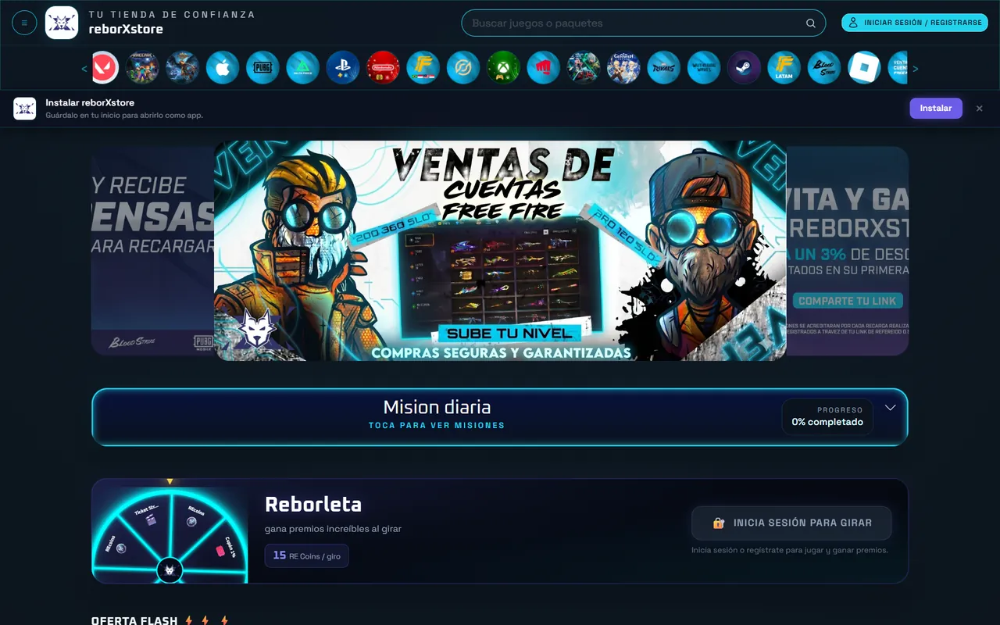
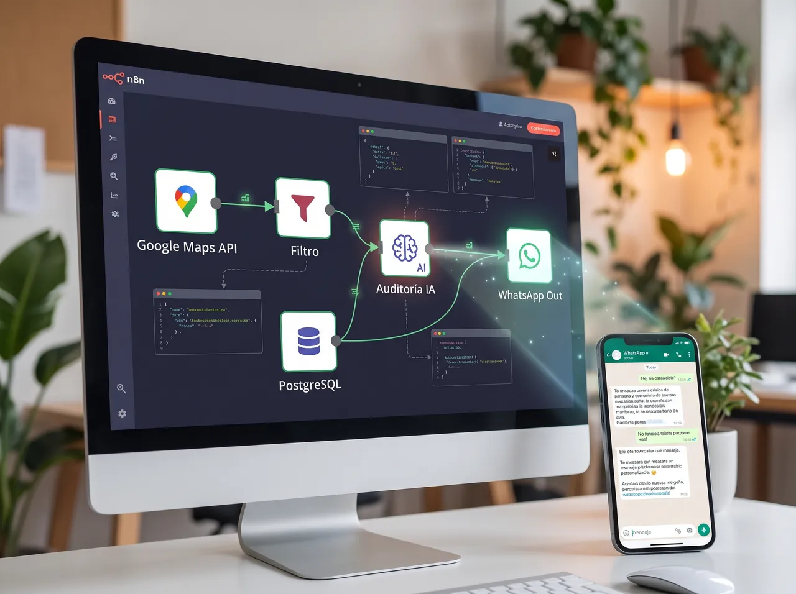

Disponible para empleo remoto o por contrato · San Cristóbal, Venezuela
Reinaldo Matheus
Desarrollador de sistemas web, SaaS y automatización con IA
Ingeniero en Informática con más de 15 años construyendo sistemas en PHP y MySQL: desde la operación web de un WMS empresarial hasta plataformas SaaS multi-tenant y automatizaciones con inteligencia artificial.
Cinco sistemas en los que trabajé de punta a punta: qué problema resolvían y qué parte construí yo.
Adventech Logística (México) · 2019–2025 · Desarrollador web del equipo de AssistPro
AssistPro WMS Operación logística web
Reto
Que los almacenes de los clientes controlaran todo el flujo físico de la mercancía desde la web, sincronizado con las terminales móviles de operación.
Qué hice
Desarrollé la parte web de todo el flujo logístico: entrada y recepción, ubicación y acomodo, traslados, pedidos, embarques, salidas y envíos. Trabajé en coordinación con el desarrollador Android para que web y terminales operaran sobre los mismos datos.
Resultado
Sistema en producción usado por varios clientes de la empresa durante 7 años.
adventech-logistica.com
En producción 3 tiendas: reborxstore.com, danisagamerstore.com y mocorecargas.com
Plataformas de recarga de videojuegos
Reto
Vender recargas de forma automática, sin intervención manual y sin riesgo de entregar sin haber cobrado.
Qué hice
Integración con API de recargas automáticas.
Verificación del pago por API antes de ejecutar cada recarga.
Panel de pedidos.
Sistema de cupones para influencers con comisión por venta.
Recarga de saldo en la cuenta del cliente.
Resultado
Tres tiendas operando, con mantenimiento y nuevas funciones de forma continua.
reborxstore.com

En producción SaaS de recordatorios de pago
CobroAlDía
Reto
Que los negocios cobren a tiempo sin perseguir a cada cliente manualmente.
Qué hice
Plataforma multi-tenant que envía recordatorios de pago automáticos por WhatsApp según el calendario de cada cliente.
cobroaldia.com · Resumen
En producción E-commerce multi-tenant
TVirtualShop
Reto
Entregar tiendas virtuales completas en poco tiempo sin duplicar código por cliente.
Qué hice
Arquitectura multi-tenant donde cada tienda tiene su propia base de datos y carpeta de tenant; dar de alta un cliente nuevo es crear su base de datos y su carpeta, sobre el mismo núcleo.
tvirtualshop.com
Flujos de trabajo completos con n8n
Automatización con n8n e inteligencia artificial
Reto
Automatizar procesos completos de captación y atención, no solo tareas sueltas.
Qué hice
Pipeline de prospección
Busca negocios en Google Maps por API.
Filtra los que tienen web y teléfono.
Descarga el sitio.
Una IA lo audita y redacta un mensaje personalizado.
Lo guarda en PostgreSQL.
Lo envía por WhatsApp con control de ritmo.
Recepcionista virtual
Para un consultorio médico, con n8n y GPT-4o.
n8n · Pipeline de prospección

Otros proyectos
CatalonegSaaS donde cada negocio crea su catálogo digital de productos.cataloneg.com
Apps AndroidAplicaciones a medida, desarrolladas con asistencia de IA.
Apps de escritorioAplicaciones a medida para Windows.